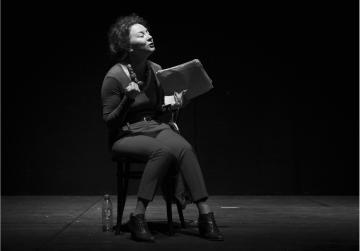
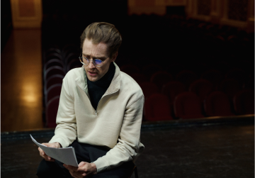
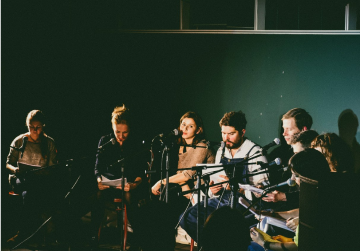
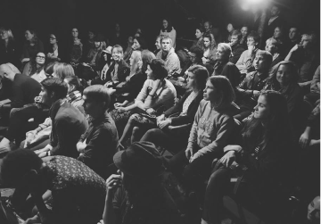
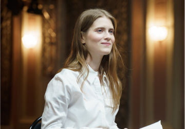

С_училища
Пьеса о демоническом обаянии студентки ПТУ и ее роковой роли в жизни преподавателя философии.

Семён Серзин сделал читку этой пьесы в рамках основной программы Любимовки-2017, Варочный Цех предоставил грант на постановку, а Московский драматический театр имени А.С. Пушкина принял спектакль в репертуар.
- 1 ч. 15 мин.
- 18+
-
Драматург
Роберт Аскинс
-
Перевод
Оксана Алёшина
-
Адаптация текста
Валерий Печейкин
-
Режиссёр
Юрий Муравицкий
-
Актёры
Фёдор Кокорев, Коля Ноекёльн, Ксения Чекина, Александр Пронькин, Владимир Морозов, Светлана Маршанкина
Пьеса «Длань Господня» (Hand to God) — лауреат американской театральной премии OBIE (Off-Broadway Theater Awards), номинант ежегодно присуждаемой премии TONY (Theatre Of New York), театрального аналога «Оскара», и номинант на Британскую премию Лоуренса Оливье в качестве «Лучшей Новой Комедии». Она была поставлена в бродвейских театрах и в лондонском Вест-Энде.
Этот спектакль — результат коллаборации фестиваля драматургии «Любимовка», который запустил проект по выпуску собственных спектаклей «Любимовка.Продакшн», Театра 18+ и Театра.doc. Исполнители — выпускники актерской лаборатории Юрия Муравицкого Московской Школы Нового Кино.
Режиссёр спектакля Юрий Муравицкий — лауреат Национальной театральной премии «Золотая маска», лауреат премий Herald Angel Award и Total Theatre Award в номинации Innovation, Experimentation & Playing with Form на Edinburgh Festival Fringe: «В этой пьесе меня задевает её смелость и свобода. И то, что она написана смешно. Мне сейчас интересны комедии. В январе я выпустил „Lё Тартюф. Комедия“ в театре на Таганке — тоже комедию и тоже в известном смысле антиклерикальную. У меня есть стойкое ощущение что всему, что сейчас происходит в нашей стране и в мире, мы можем противопоставить только смех. Иногда горький смех, иногда злой. Сейчас в воздухе столько ненависти, что нам всем полезно больше смеяться. И над собой в том числе. „Длань Господня“ — это чёрная комедия. Помимо прочего, она показывает к чему приводит навязывание и насильственное насаждение религии».
Пьеса была успешно представлена в России в формате читки в 2016 году рамках лаборатории LARK+Любимовка на сцене Центра им. Мейерхольда.
Почитать пьесу
Заголовок блока с фотографиями

- 
- 
- 
- 
- 


-

«Действие пьесы „Длань Господня“ разворачивается в подвале провинциальной церкви в Техасе, где мать главного героя с группой добровольцев готовит кукольное представление. Ей отчаянно нужна эта работа, её муж недавно умер, оставив её с сыном-подростком в эмоциональной и финансовой яме. И вот жуткая тварь захватывает контроль над левой рукой её беспокойного Джейсона и принимается терроризировать его и всех вокруг. По мере накала страстей окружающие начинают подозревать, что рука одержима самим дьяволом, и пастор Грег предлагает прибегнуть к экзорцизму. Однако „Длань Господня“ — это не ужастик, по крайней мере, природа зла тут вовсе не сверхъестественная. Чёрная комедия Аскинса о разделённой надвое душе человека ненавязчиво обнажает глубинные импульсы — сексуальные, саморазрушительные, агрессивные — которые притаились в каждом из нас».
Читать полностью -

«Действие пьесы «Длань Господня» разворачивается в подвале провинциальной церкви в Техасе, где мать главного героя с группой добровольцев готовит кукольное представление. Ей отчаянно нужна эта работа, её муж недавно умер, оставив её с сыном-подростком в эмоциональной и финансовой яме. И вот жуткая тварь захватывает контроль над левой рукой её беспокойного Джейсона и принимается терроризировать его и всех вокруг.
Читать полностью -
«Действие пьесы „Длань Господня“ разворачивается в подвале провинциальной церкви в Техасе, где мать главного героя с группой добровольцев готовит кукольное представление. Ей отчаянно нужна эта работа, её муж недавно умер, оставив её с сыном-подростком в эмоциональной и финансовой яме. И вот жуткая тварь захватывает контроль над левой рукой её беспокойного Джейсона и принимается терроризировать его и всех вокруг. По мере накала страстей окружающие начинают подозревать, что рука одержима самим дьяволом, и пастор Грег предлагает прибегнуть к экзорцизму. Однако „Длань Господня“ — это не ужастик, по крайней мере, природа зла тут вовсе не сверхъестественная. Чёрная комедия Аскинса о разделённой надвое душе человека ненавязчиво обнажает глубинные импульсы — сексуальные, саморазрушительные, агрессивные — которые притаились в каждом из нас».
Читать полностью -
«Действие пьесы «Длань Господня» разворачивается в подвале провинциальной церкви в Техасе, где мать главного героя с группой добровольцев готовит кукольное представление. Ей отчаянно нужна эта работа, её муж недавно умер, оставив её с сыном-подростком в эмоциональной и финансовой яме. И вот жуткая тварь захватывает контроль над левой рукой её беспокойного Джейсона и принимается терроризировать его и всех вокруг.
Читать полностью